正文: 多图预警，流量党慎入，部分图片可能引起不适，请慎点
多图预警，流量党慎入，部分图片可能引起不适，请慎点
多图预警，流量党慎入，部分图片可能引起不适，请慎点
先放本尊镇楼~
我的笑点超低，平时特别容易情不自禁地傻笑，大笑，狂笑，like this:
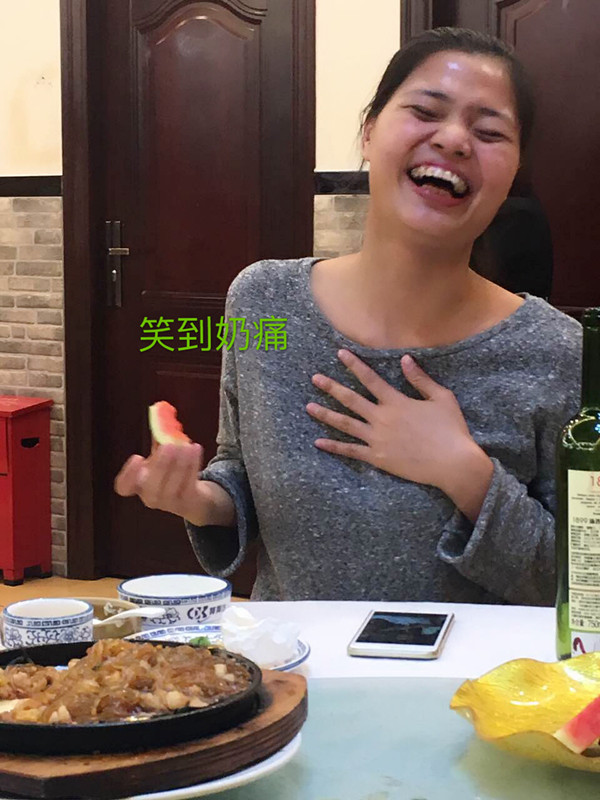图片创建于2016.11.03和同事聚餐，同事恶搞我的表情(๑˙ー˙๑)我认为正常的笑容应该是左边的样子，甜甜的，我的牙看起来太多了，笑起来像要吃人...（左边是我7岁的表妹）
龅牙导致我无论傻笑大笑狂笑的表情都很狰狞，可我又非常在乎，所以每次笑都会努力抿嘴笑或者捂嘴笑，like this:
是的我很不自信。我不喜欢照镜子，好怕别人在侧面看我讲话，或拍照；加上痘痘肌，整个青春期，我自卑得不行。我高中时发现龅牙时就想过矫正牙齿，但因为家人没有给我经济支持，这件事不了了之。
直到2015年，不知道为什么我慢慢地意识到自己长崩了。龅牙长得越来越放肆，牙齿也更乱了。后来去拔智齿医生告诉我才知道，原来我长了阻生齿，牙齿都被挤歪了。
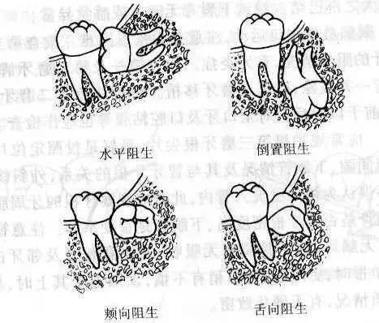（各种阻生齿，图片来自网络，侵删）
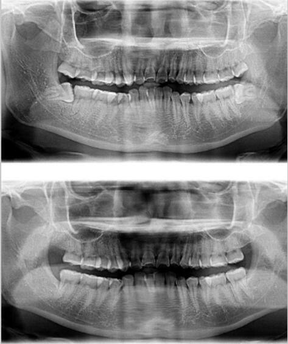
我长的是水平阻生齿。拔这两个牙齿的经历太痛苦我永远都不想回想(っ˘̩╭╮˘̩)っ
年轻时的我长这样：
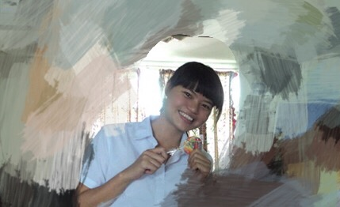
拉近点。。。
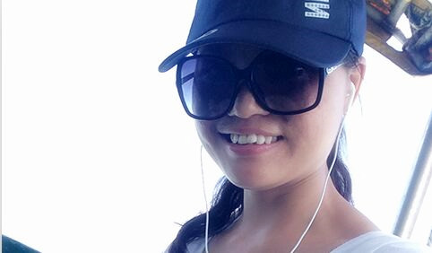
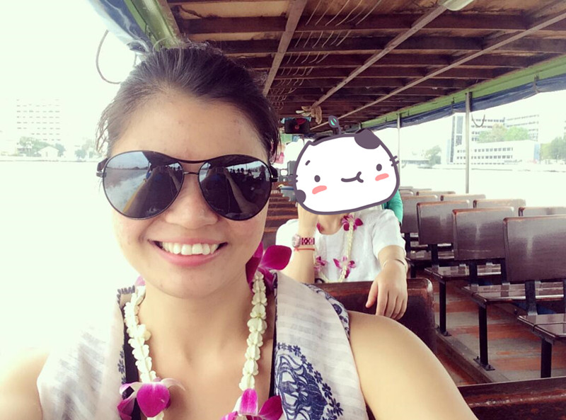
崩了( ´･ᴗ･` )
2015年6月
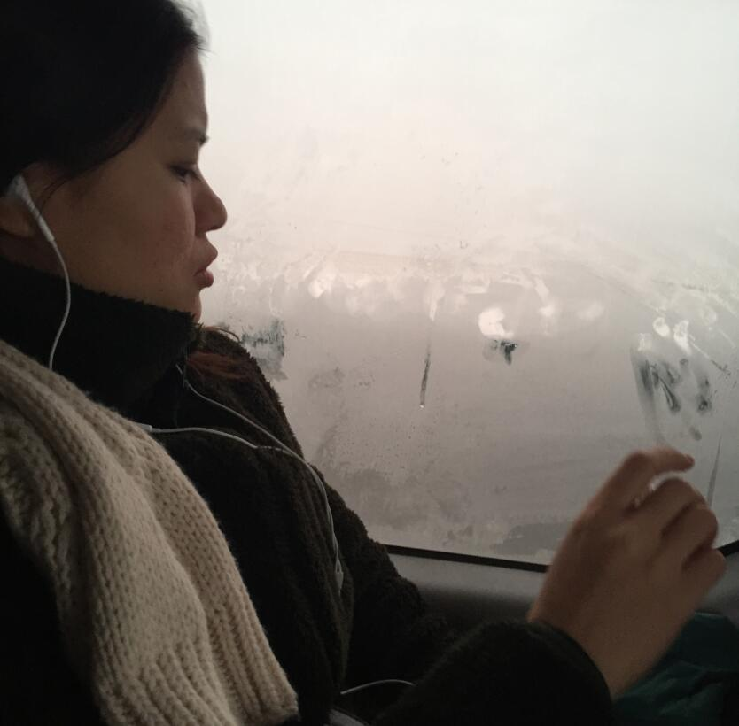2016.01.01，和弟弟去旅游他偷拍我的侧脸，嘴！好！凸！(╯°Д°)╯（ ┻━┻
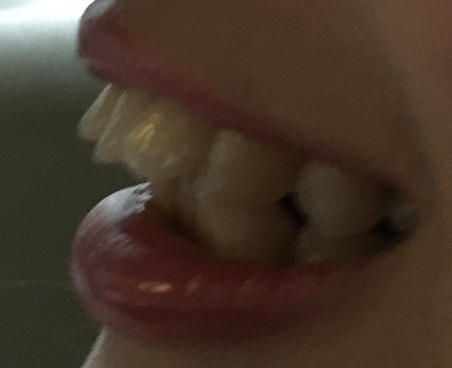
整牙前一个星期2016.01.12去朋友婚礼的路上，基友坚持要帮我拍照留念。
婚礼胡吃海喝一顿，然后2016.1.17就马上过渡到我的牙套生涯啦。
矫正前牙齿长酱：
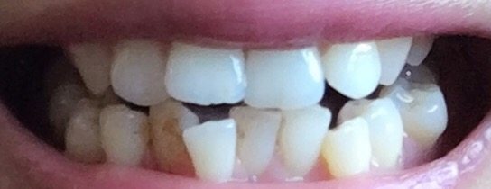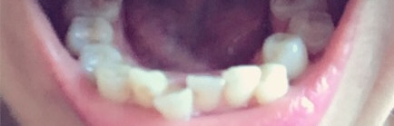
戴上牙套第一天：2016.01.18
2016.01.23
嘴合起来像含着水：
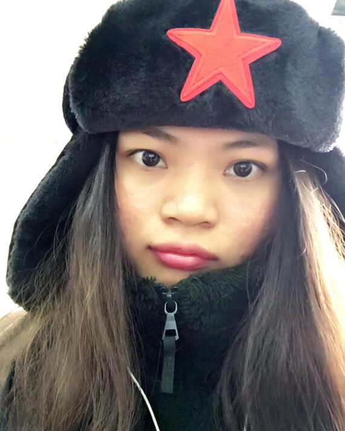2016.02.18，开始戴下牙的牙套
2016.03.01，仅仅43天，上门牙已经排整齐了。amazing...当时发现的时候真是 (๑‾ ꇴ ‾๑)
2016.03.15，下门牙慢慢开始排整齐
抿嘴笑的效果：嘴唇包不住hhhh
不过通常对熟人我都会笑到把整个牙套都要露出来。
像我有个客户，他两口子都带牙套，金属托槽，他在WhatsApp天天秀恩爱，每次秀的照片都是两个人露出钢牙的灿烂的笑脸，本狗被虐得不行不行的
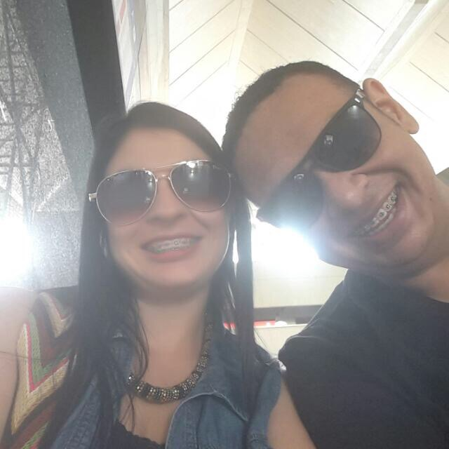
2016.04.02，下门牙的钢丝由波浪线慢慢变直线，
2016.05.13 下牙波浪线开始变平
2016.06.24
7月份的照片丢了，8、9、10月份我懒得拍，然后2016.11.03
效果怎么样捏，自己翻上上面做对比吧。
还有上次复诊医生告诉我上面的牙缝收得差不多了，下个月就开始把牙齿往回拉。只需要11个月！太开心啦 (˃̶͈̀௰˂̶͈́)
好了，戴牙套到底是什么体验？
对个人和生活：
首先，我的是龅牙而且牙齿很乱，戴牙套前必须要拔正常牙，空出位置要让长乱的牙齿有地方排队。我前前后后拔了四颗智齿和四颗正常牙。拔正常牙不痛，过程是1/2分钟的事情。麻药过后只有一天不适。如果以后有宝宝要拔牙我建议不要一次拔两颗牙，会好难受，本宝宝一天拔两颗正常牙，麻药过后痛到要吃止痛片，血流了一天都没止。
然后，带上牙套嘴更突。说话不自然，偶尔会流口水，吃饭会漏米粒。尤其是医生把我的后牙垫高了，吃东西各种不方便。牙齿很酸。酸到什么程度？刚开始矫正后一周我连桂林米粉都咬不断。三餐都是流质食物，当然结果跟所有人一样：暴瘦。后来慢慢研究搭配做自己能吃的营养餐，第三个月才慢慢回到正常生活轨道。以后的复诊加紧钢丝牙齿也会酸4-7天，不过习惯就好，我个人并没有觉得有很大影响。
戴上牙套后我才意识到，以前我真是太不注重口腔卫生，太不爱惜自己的牙齿了。现在会随身携带牙齿清洁工具，饭后必刷牙，（可是牙齿还是变黄了。。。）不爱吃高纤维的蔬菜和肉。不再随时吃零食，要是真想吃就会留到某个正餐后一起吃。
看到人的牙齿长得很乱就会很想建议他们去整。家里的小孩子不刷牙我就以身说法，不刷牙就我这个下场，给他们看变态的钢丝，然后装作很痛的样子，他们都会害怕。最典型的是我外甥女（2岁+）。有一次我去看她，姐姐告诉我每天都要追着哄她刷牙她都不让。于是我告诉她姨姨不刷牙，牙齿长了很多虫虫，会“哎哟”，用铁丝绑着也会“哎哟”，“哎哟”好多好多天。我让她摸摸我的钢丝，那天开始就乖乖听话早晚刷牙了。
对工作：
很尴尬的一件事就是戴牙套后有时候说话会流口水。有一次开会人都到齐了，我和同事聊着聊着，口水就流出来了，赶紧用衣袖擦了擦，不过同事也就笑笑。
见客户时，（我的客户99%是外国人）有时还能多一个话题：我们家女儿/儿子night years old也正在矫正牙齿blablabla... 和客户吃饭也不会麻烦，给自己点个能吃的菜就行了。只要是做正常生意，客户不会因为一个人戴牙套而拒绝和ta合作或者对ta有偏见。
平时
我：“经理，我托槽掉了，想请几个小时假。”
经理：“你赶紧去啊。”
聚餐时
领导：“服务员，我们今晚只吃羊排。”
我：“服务员麻烦给我准备一套刀叉，谢谢。”
中秋节
我：“小麦，我给你看看我刚吃了豆沙月饼的牙套。”
同事们：“( ꒪Д꒪)”
对恋爱：
当时医生建议我做牙齿矫正时，我问了价格后有点心动，但是想到我即将26高龄，早已经错过矫正的最佳时期，而且要戴2年牙套，我还没谈恋爱呢，怎么可能戴着牙套和男朋友接吻？那时我就婉拒了。
题主这里提到了年龄25岁，我相信题主（包括很多关注这个问题的单身宝宝）除了担心这个年龄矫正牙齿对牙齿的伤害，更关心的是：戴上牙套了男生/女生会不会不喜欢我，拍拖时（接吻或者其他）会不会有影响。为此我阅读过相关的问题，很多答主肯定了没有影响甚至撒了一把狗粮。
自从和前男友分手后我N年了都没有接过吻了，所以这方面我没办法给出一个肯定的答案。不过我吻/咬过自己的手臂内侧的嫩肉，并没有不适的感觉（笑
但是，我敢肯定的是，一个正常的男生不会因为你戴牙套而嫌弃你。我和男生约会出去吃饭，他们都会很体贴的点我也能吃的菜，饭后要去找洗手间刷牙，他们等我也不会嫌烦。出去玩也会考虑到我的情况并提醒我带牙刷。
我认为：一个男人因为你戴了牙套/长得矮/长痘痘/有疤痕而拒绝和你交往，这种男人完全没有取悦的价值。
下面是几个我拔牙前比较关心的实际问题。
关于拔正常牙：
戴牙套开始我担心拔那么多牙齿会不会对牙齿有影响等等等等。其实这些担心都多余。现在我还有24颗正常牙，最关键的是牙齿少了我的嘴也变小了！！！以前笑的时候整副牙都露出来超惊悚，现在笑得跟Angelababy一样甜！
图片略：）
关于口腔溃疡：
可能因为我选的是陶瓷托槽，我至今都没有出现像其他答主的说的口腔溃疡到吃不了东西的情况，只是戴上牙套后一个星期有刮嘴，一旦口腔适应了牙套的存在就没刮了。有时换钢丝会有点刮到口腔内壁，但凡有这种情况我会马上找医生帮我处理直到它不刮口。倒是后牙的口腔内壁的地方有一条条钢丝的勒痕，不痛，但用舌头舔怪怪的，不知道以后能不能长平滑。
我建议如果有宝宝打算矫正，添多几千块钱，做个陶瓷托槽的。除了美观，这是时刻都在你嘴里影响你感觉的东西，你就尽量让自己舒服些。经济条件差点的少买个包包衣服这些钱都能省出来。矫正的过程漫长且辛苦，需要牺牲很多东西，所以你值得选择更好的。
关于牙套脸：
大家可以看看这个回答
所谓的牙套脸是由于咬肌萎缩造成的吗？为什么拔牙矫正好像更容易造成牙套脸，有什么方法可以规避这种风险吗？ - 徐子卿的回答
我方脸，本身颧骨比较突出，加上拔了8颗牙齿，脸都凹进去了，这样更显得颧骨更高。颧骨高显得人好凶嘤嘤嘤。好担心，后来看到上面的回答，不就是锻炼咀嚼肌么？办公室常备QQ糖，各种肉脯吃起来。那些说要等到摘牙套才跟牛肉干大战三百回合的，你们是不是太守规矩了呀。